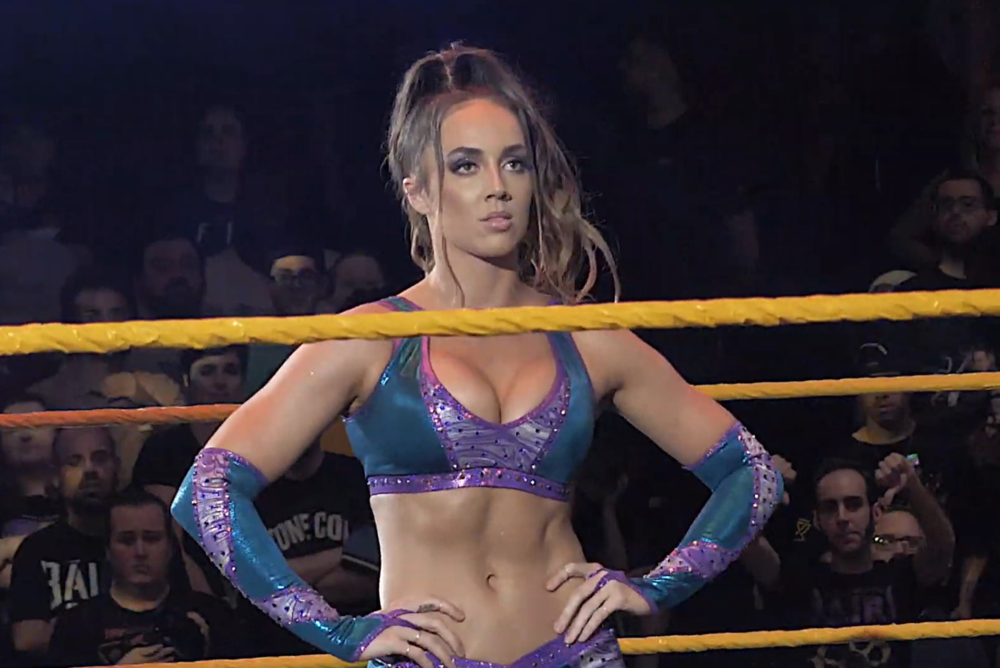

SmackDown stasera, 23 ottobre 2026: card, orario italiano e dove vederlo
Stanotte alle 2:00 su Netflix c'è SmackDown da Ontario, California. Chelsea Green difende il titolo contro Roxanne Perez, più una Street Fight e i titoli di coppia femminili.
Foto in copertina: Diva Insider, CC BY 3.0, via Wikimedia Commons
Stanotte c'è SmackDown. Dalle 2:00 su Netflix, nella notte tra venerdì 23 e sabato 24 ottobre.
Il piatto forte: Chelsea Green difende il WWE Women's Championship contro Roxanne Perez. E sotto c'è tutto il peso di Crown Jewel.
SmackDown oggi: la card del 23 ottobre
Ecco i match annunciati da WWE.com:
- Chelsea Green contro Roxanne Perez – WWE Women's Championship
- Giulia contro Blake Monroe – Street Fight
- Alexa Bliss e Tatum Paxley contro Michin e B-Fab – Women's Tag Team Championship
- MFTs contro Shinsuke Nakamura e Kyoki – match di coppia, titoli non in palio
Lo show arriva dalla Toyota Arena di Ontario, in California (lo dicono le biglietterie: WWE.com non indica l'arena).
Orario italiano e dove vederlo
| Cosa | Quando |
|---|---|
| SmackDown 23 ottobre | notte tra venerdì e sabato, 2:00 |
| Dove | Netflix, con il commento italiano |
Attenzione alla settimana prossima. Domenica 25 l'Italia torna all'ora solare, gli USA solo il 1° novembre. Quindi SmackDown del 30 ottobre parte all'1:00. Tutto spiegato nella guida agli orari WWE su Netflix. Se sei nuovo, parti da dove vedere la WWE in Italia.
Perché Chelsea contro Roxanne conta
Due settimane fa a Raw Roxanne Perez ha battuto Chelsea Green. Senza titolo in palio, e con l'aiuto di Liv Morgan e Raquel Rodriguez. Il Judgment Day, insomma.
Stanotte la cintura è in palio. E se Chelsea la perde, salta il piano di Crown Jewel: Liv Morgan contro Chelsea Green, campionessa contro campionessa, il 7 novembre. Tutta la card nella guida a Crown Jewel 2026.
Chi ha cosa oggi? Trovi tutto nei campioni WWE attuali.
Gli altri match
Giulia contro Blake Monroe è una faida che va avanti da mesi. Monroe ha battuto Giulia al suo primo match sul ring di SmackDown, il 2 ottobre. Ora si va in Street Fight: niente squalifiche.
Bliss e Paxley sono campionesse di coppia da due settimane appena: hanno vinto il 9 ottobre contro le Fatal Influence. Prima difesa, contro Michin e B-Fab.
Il mio pronostico
Ragazzi, io dico Chelsea. A due settimane da Crown Jewel la WWE non butta via una campionessa contro campionessa. Ma il Judgment Day ci metterà le mani, ci scommetto. E Roxanne ne esce comunque forte.
La Street Fight invece può essere la sorpresa della serata. Giulia ha bisogno di vincere, e lo sa.
E tu chi vedi con la cintura domani mattina? Scrivimelo nei commenti su YouTube. Domani trovi i risultati completi qui sul sito, nella rubrica Reaction.
Domande frequenti
A che ora c'è SmackDown stanotte in Italia?
Nella notte tra venerdì 23 e sabato 24 ottobre 2026, dalle 2:00 ora italiana, in diretta su Netflix. È l'ultimo SmackDown con l'orario normale prima del cambio dell'ora.
Dove vedere SmackDown in Italia?
In diretta su Netflix, con il commento italiano. Dal 1° aprile 2026 Raw, SmackDown, NXT e i grandi eventi WWE sono tutti lì.
Quali match ci sono a SmackDown del 23 ottobre 2026?
Chelsea Green contro Roxanne Perez per il WWE Women's Championship, Giulia contro Blake Monroe in una Street Fight, Alexa Bliss e Tatum Paxley contro Michin e B-Fab per i titoli di coppia femminili, e i MFTs contro Shinsuke Nakamura e Kyoki (senza titoli in palio).
Dove si svolge SmackDown del 23 ottobre?
Alla Toyota Arena di Ontario, in California, secondo le biglietterie. WWE.com nella presentazione non indica l'arena.
E il SmackDown del 30 ottobre a che ora è?
Alle 1:00 di sabato 31 ottobre, un'ora prima del solito, perché l'Italia torna all'ora solare il 25 ottobre e gli Stati Uniti solo il 1° novembre.